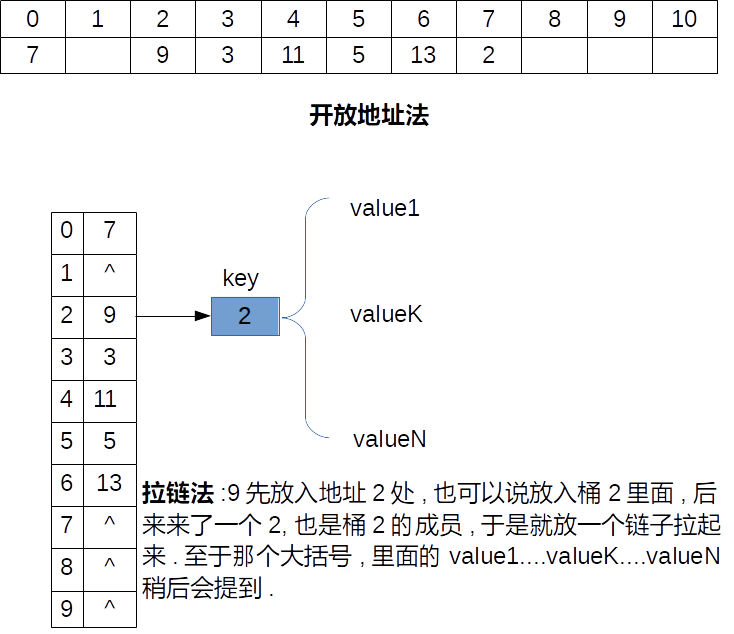

#include <cstdio> #include <iostream> #include <unordered_map> #include <vector> using namespace std; class Solution { public: vector<int> twoSum(vector<int>& nums, int target) { //Hash表 unordered_map<int,vector<int> > ht; //存放返回结果的向量 vector<int> result; //遍历元素 for(int i=0;i<nums.size();++i) { int key=nums[i]; unordered_map<int,vector<int> >::iterator pos = ht.find(target - key); //如果target-key在表里面 if( pos != ht.end()) { result.push_back(i); result.push_back(pos->second[0]); } else { //target-key不在表里面时,先看看表中是否已经有key,如果有key则 //存入索引即可,注意这里的用的是类似数组的访问方式ht[key] if(ht.count(key)) ht[key].push_back(i); else { //如果没有key,凑成一对儿加入Hash表 vector<int> tmp ; tmp.push_back(i); ht.insert(make_pair(key,tmp)); } } } return result; } }; //----------------Driver------------------------- int main() { vector<int> nums={1,7,5,3,3,2,1,1,1,1}; Solution sol; vector<int> v = sol.twoSum(nums,9); cout<<v[0]<<"\t"<<v[1]<<endl; return 0; } /* //-----makefile all: @g++ -std=c++11 solve.cpp -o solve @./solve clean: rm -f solve reset //----leetcode accepted 16 / 16 test cases passed. Status: Accepted Runtime: 43 ms Submitted: 0 minutes ago 2017-01-06 Fri 02:15 PM */
自C++ 11标准出来,STL中Hash表用的是unordered_map这个容器,以前用的是hash_map.我用的g++编译器, 使用这个新的容器需要开启-std=c++11这个选项,具体的makefilek,Solution一节里面有.
先来简单回顾一下Hash表,Hash表的原理是addr=Hash(key),可以看到有三部分组成:addr,Hash(),key. 也就是给一个键值key,通过一个哈希函数Hash,计算出存储地址addr.根据存储空间的动静, Hash算法分为两种:一种是开放地址法(静态),另一种是拉链法(动态).
Hash(11)=4 Hash(13)=6 Hash(5)=5 Hash(3)=3 Hash(9)=2 Hash(2)=2 Hash(7)=0于是可以很快的给出两种情况下的Hash表,如下: 
对应于STL中,unordered_map就是使用开放链表构建的Hash表,基本结构是(key,maped_values).因此我们就用它来解决问题.
由于涉及都是基本的内置数据类型, 因此我们不需要另外实现Hash函数和比较函数,那么接下来就是决定谁做key,我们一思考,采用索引做key是不合理的,因为索引本来就是[0,n)这样一组连续增长的序列, 这样用Hash没什么意义.于是我们可以以向量nums中的元素作为key
保存的值为该key对应的索引,由于可能相同的元素,那么我们第二个元素maped_values应该是一个向量(这里使用vector),来存重复元素的不同索引, 比如key=2有两个,那么key的value1,value2就分别是2的两个索引,这就解释了上图大括号处的含义.
说了这么多,接下来才是该算法的核心思路.
首先依次遍历向量nums中的元素,遇到元素nums[i],记做key,检测target-key是否在Hash表中,如果在说明我们已经找到了,算法结束.
如果target-key没有在Hash表里面,当key已经存在于表中时,存入新的索引,如果不在表中,那么将该元素key弄成"一对儿"加到Hash表里面.
另外要注意的是,STL中的元素访问可以使用类似数组的方式访问(称为Associative Arrays:关联数组),比如代码中ht[key].
如果熟悉unordered_map的操作,写出上面的代码并不是很难.
刚开始我对这个unordered_map容器不是很了解,参考The C++ standard Library A Tutorial and reference 2th总结了一下.
对于集合set,不重复就是说集合里的不能有重复元素,而可重复就是说集合里面可以有重复的元素.对于映射,重复与否则是针对键而言的.
这里主要介绍unordered_map.它声明与std命名空间中,其类模板定义如下:template <typename Key, typename T, typename Hash = hash<T>, typename EqPred = equal_to<T>, typename Allocator = allocator<pair<const Key, T> > > class unordered_map;可以看到一共有五个参数,其中前两个是必须提供的,后两个是可选的.五个参数含义如下:
unordered_map<Key,T> unordered_map<Key,T,Hash> unordered_map<Key,T,Hash,Cmp>你可以用一个初始化列表来初始化容器:
std::unordered_map<std::string,std::string> mymap;
mymap = {{"Australia","Canberra"},{"U.S.","Washington"},{"France","Paris"}};
//或者等价的如下:
std::unordered_map<std::string,std::string> mymap({{"Australia","Canberra"},{"U.S.","Washington"},{"France","Paris"}});
但是要注意,上述两者的构造结果并不同(但是这是为什么呢?)如下:
#include <cstdio> #include <iostream> #include <unordered_map> #include <vector> using namespace std; void PrintBucket(unordered_map<string,string> mymap) { for ( auto it = mymap.begin(); it != mymap.end(); ++it ) std::cout << " " << it->first << ":" << it->second; std::cout << std::endl; std::cout << "buckets contain:\n"; for ( unsigned i = 0; i < mymap.bucket_count(); ++i) { std::cout << "bucket #" << i << " contains:"; for ( auto local_it = mymap.begin(i); local_it!= mymap.end(i); ++local_it ) std::cout << " " << local_it->first << ":" << local_it->second; std::cout << std::endl; } } int main() { std::unordered_map<std::string,std::string> imap; imap = {{"Australia","Canberra"},{"U.S.","Washington"},{"France","Paris"}}; std::unordered_map<std::string,std::string> iimap({{"Australia","Canberra"},{"U.S.","Washington"},{"France","Paris"}}); cout<<endl; PrintBucket(imap);cout<<endl; PrintBucket(iimap); return 0; }输出结构如下:
U.S.:Washington France:Paris Australia:Canberra buckets contain: bucket #0 contains: bucket #1 contains: bucket #2 contains: U.S.:Washington bucket #3 contains: France:Paris Australia:Canberra bucket #4 contains: bucket #5 contains: bucket #6 contains: bucket #7 contains: bucket #8 contains: bucket #9 contains: bucket #10 contains: France:Paris Australia:Canberra U.S.:Washington buckets contain: bucket #0 contains: bucket #1 contains: France:Paris bucket #2 contains: bucket #3 contains: U.S.:Washington bucket #4 contains: bucket #5 contains: bucket #6 contains: Australia:Canberra另外两种方法是:用复制构造方法来初始化,也就是unordered_map iimap(imap)以及用另一个map的子范围,比如unordered_map iimap(imap.begin(),imap.end()), 注意初始化后的范围是[begin,end).